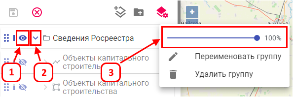
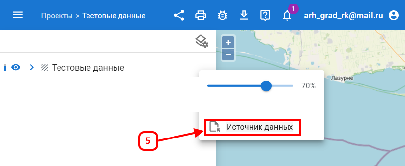
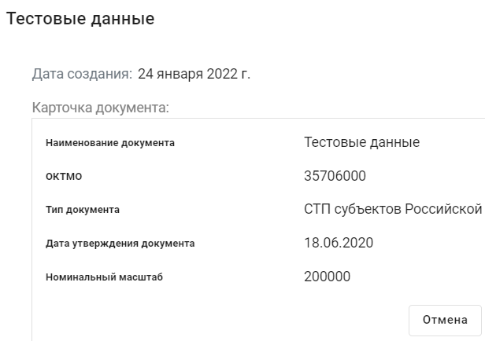
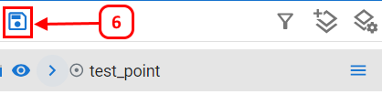

Управление отображением группы или слоя
Отображение слоя на карте контролируется с помощью индикатора Глаз (1).
Сохранение состояния группы
Чтобы сохранить группу развернутой по умолчанию, разверните ее (2).

Настройка прозрачности слоя
Чтобы задать прозрачность слоя по умолчанию, измените ее (3) и сохраните изменения (6).

Источник данных (5) — открывает карточку слоя.

Для сохранения изменений нажмите (6).
